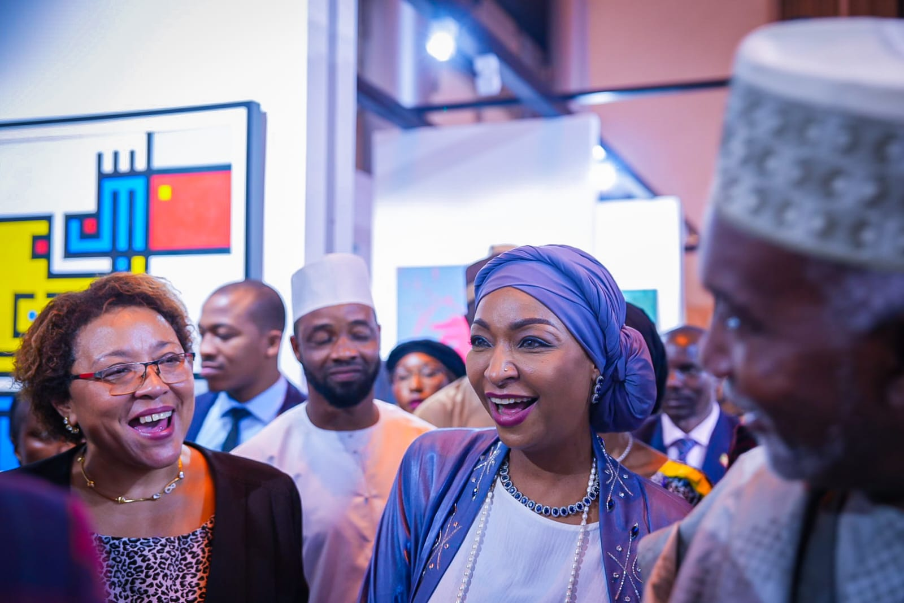
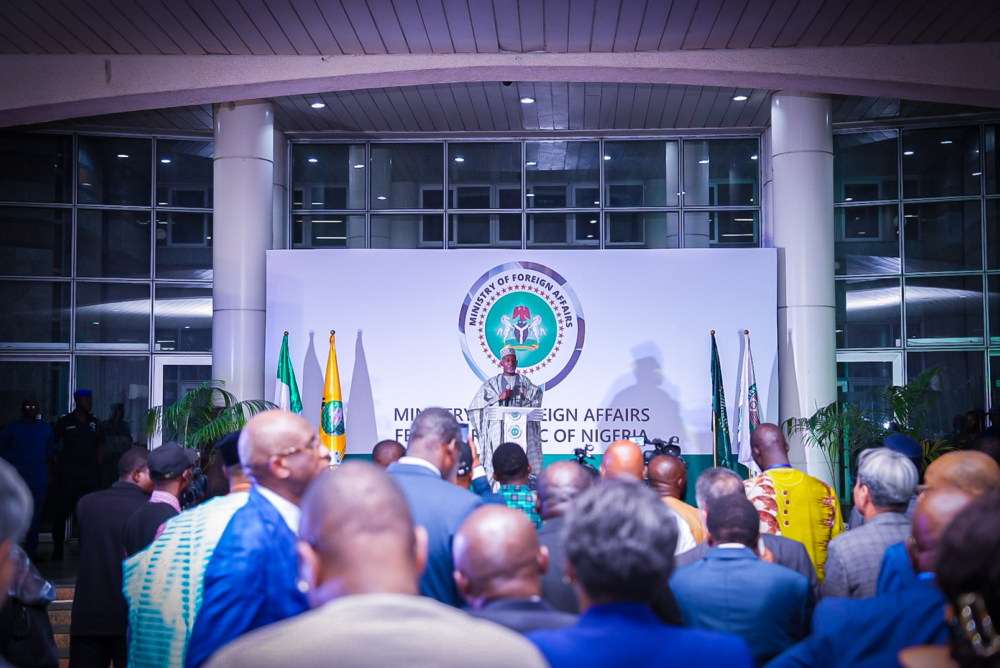
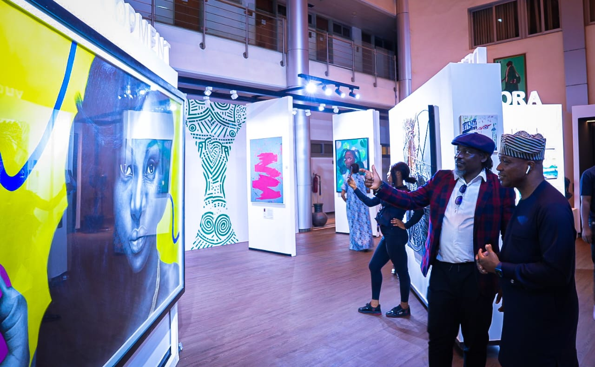
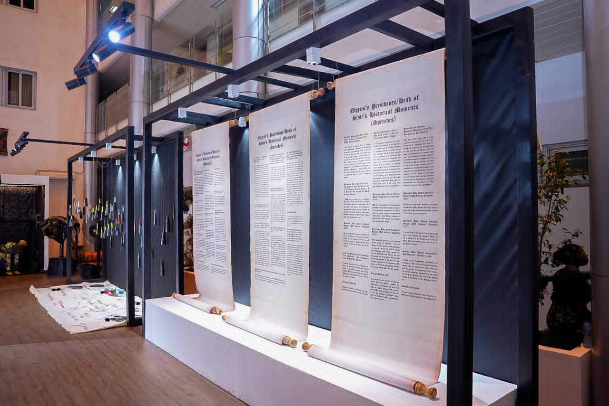

Promote the 4D Doctrine
Champion President Tinubu's Democracy, Development, Demography and Diaspora doctrine through cultural programming and diplomatic outreach.
Overview
The Atrium Gallery at the Nigerian Ministry of Foreign Affairs is a distinguished space for cultural mediation, artistic expression, and diplomatic engagement.
Located within the Ministry's headquarters in Abuja, the Atrium serves as a living showcase of Nigeria's rich heritage, the depth of its culture and the ambition of its global diplomatic vision. It welcomes visiting dignitaries, partner organisations, students and citizens into a curated experience of Nigeria's story on the world stage.
The Atrium is conceived as a platform where soft power meets statecraft — where art, food, history and dialogue converge to strengthen Nigeria's relationships with the international community.
Learn MoreWhy it matters
The Atrium is dedicated to operationalizing President Bola Ahmed Tinubu's 4D Foreign Policy Doctrine Democracy, Development, Demography, and Diaspora—by leveraging the power of art and culture to enhance diplomatic relations.
It is a platform for projecting Nigeria's diverse culture, history, gastronomy, and heritage to visitors, dignitaries, and high-level diplomatic delegations.

What it does
The Atrium advances Nigeria's diplomatic mission through culture, dialogue and purposeful engagement.
Champion President Tinubu's Democracy, Development, Demography and Diaspora doctrine through cultural programming and diplomatic outreach.
Foster deeper understanding between Nigeria and the world through curated art, exhibitions and cultural exchange programmes.
Build credibility and goodwill with the global community through transparency, inclusion and shared cultural values.
Create platforms for meaningful exchange between Nigeria's diverse cultural traditions and the international diplomatic community.
Utilize food as a diplomatic tool to enhance cultural understanding and relations between nations.
Milestone
The MFA Atrium was officially launched on December 12, 2023, as a formal introduction to President Tinubu's 4D Doctrine on Diplomacy. The event, themed "Homecoming," gathered members of the diplomatic corps, organizations, and strategic partners to celebrate Nigeria's cultural heritage and foreign policy journey.
The launch was well attended, with 73 members of the diplomatic community present.
View Gallery


Gallery
A glimpse of the exhibitions, receptions and cultural showcases hosted at the Atrium.




In Motion
Relive the official launch of the MFA Atrium on 12 December 2023, themed "Homecoming" — a celebration of Nigeria's cultural heritage and foreign policy vision.
Official launch of the MFA Atrium, Abuja · 12 December 2023
Looking ahead
Replicating the Atrium model at Nigeria's New York Mission and beyond
The Minister is set to replicate the MFA HQ Atrium at Nigeria's New York Mission to further Nigeria's cultural diplomacy efforts.

Nigeria is a significant player on the international stage, maintaining a vast network of diplomatic missions worldwide.
See More